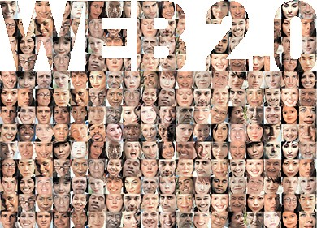

Help maximize development and innovation in Palestine by achieving collective intelligence.

One of the most emerging trends nowadays in development and innovation is what is known as 'Crowdsourcing'. According to Wikipedia, Crowdsourcing is the act of sourcing tasks traditionally performed by specific individuals to an undefined large group of people or community (crowd) through an open call. Crowdsourcing depends essentially on the fact that because it is an open call to an undefined group of people, it gathers those who are most fit to perform tasks, solve complex problems and contribute with the most relevant and fresh ideas. For example, the public may be invited to develop a new technology, carry out a design task (also known as community-based design or "design by democracy"), refine or carry out the steps of an algorithm, or help capture and analyze large amounts of data. In short, Crowdsourcing is a distributed problem-solving and production model where problems are broadcast to an unknown group of solvers in the form of an open call for solutions. Users -also known as the crowd- typically form into online communities, and the crowd submits solutions. The crowd also sorts through the solutions, finding the best ones.
This project aims to develop a Facebook-based application that enables Crowdsourcing in the Palestinian context by allowing online users and activists to collaborate together towards achieving a Palestinian collective intelligence. In this project, students will collaborate with the Student Affairs Department at Birzeit University to test the system.
Remarks:
See Other Project Proposals: